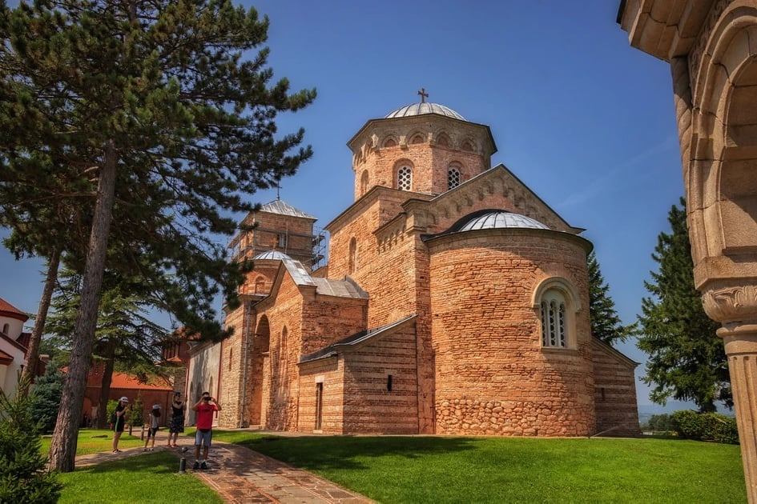

Manastiri i crkve u Kraljevu
Manastir Žiča
Žiča je srpski srednjovekovni manastir iz prve polovine 13. veka, koji se nalazi u blizini Kraljeva i pripada Eparhiji žičkoj Srpske pravoslavne crkva. Podigao ju je prvi kralj Srbije iz dinastije Nemanjića, Stefan Nemanjić (veliki župan 1196—1217, kralj 1217—1228), a izgradnja je trajala od 1206. do 1221. godine.[1] Stefan Prvovenčani je takođe želeo da se i budući kraljevi Srbije krunišu u Žiči. Sedam srpskih kraljeva iz dinastije Nemanjića je tu krunisano.
Manastir Studenica

Manastir Studenica je muški manastir Srpske pravoslavne crkve. Osnovao ga je 1186. godine srpski župan Stefan Nemanja.[1] Godine 1206. na mesto igumana dolazi princ Rastko — u monaštvu prvi arhiepiskop srpski, Sveti Sava — i pod njegovim starateljstvom Studenica postaje kulturno, umetničko, bolničko i duhovno središte srpske države. Starešina manastira je arhimandrit Tihon (Rakićević), sa bratstvom na čelu od 2004. godine
Manastir Svete Petke

Selo Stubal je 1780. godine imalo samo tri kuće i bilo je naseljeno stanovništvom iz Hercegovine. Početkom 19. veka selo je imalo oko dvadesetak kuća. Postoje predanja da je selo Stubal dobilo naziv po četvorougaonom kamenu koji podseća na stub, a koji se još odavnina nalazi u blizini sela. Pretpostavlja se da je kamen deo drevne crkvice, tačnije njen oltarski deo i narod veruje da je ovaj kamen čudotvoran. Pretpostavlja se da je crkvica bila izgrađena od trošnog materijala, jer njeni tragovi nisu sačuvani ni u temelju. Jedino što je ostalo iz tog perioda je kamen. Dugo godina kamen je bio nepokriven, a 1900. godine nastala je kamena horizontalna ploča. Od tada kamen liči na četvorougaoni kratki stub koji je ukopan u zemlju.
Manastir Voljavča

Skriven u gustoj šumi uz Voljavački potok na severistočnoj padini Rudnika, u blizini Stragara, nalazi se manastir Voljavča sa crkvom posvećenom Sv. Mihailu i Gavrilu. Manastir, zadužbina Mihaila Končinovića, vlastelina despota Stefana Lazarevića, obnovljen je početkom 15 veka na ostacima stare crkve iz 1050. godine.[1] Upisan je registar spomenika kulture od izuzetnog značaja od 1981.
Crkva Svete Trojice

U gornjem delu Karanovca (stari naziv Kraljeva), varoši zvanoj "Stara Čaršija", u kome su živeli Srbi, bila je u tursko doba mala drvena pravoslavna crkva od debelih dasaka i greda. Tu je boravio knez Miloš. Na mestu gde je knez Miloš noćio, sanjao je da ima crkva i da se u njoj molio bogu da mu pomogne da bi pobedio Turke i oslobodio narod srpski turskog ropstva. Kada se probudio, setio se sna i rekao "ako bog da, te uspem da pobedim Turke, na ovome mestu podići ću crkvu u znak zahvalnosti Bogu". Zaista, on je i ispunio obećanje i 1824. godine započeo izgradnju crkve, koju je posvetio Svetoj Trojici. Kada je knez Miloš počeo da zida crkvu, naredio je da sa stara crkva-brvnara premesti u portu nove crkve i da se u njoj služi dok se ne sazida nova crkva, što je i učinjeno.
Hram Svetog Save

Izgradnja crkve posvećene Spaljivnju moštiju Svetog Save započeto je 1. avgusta 1994. godine, molitvom za početak gradnje u parku u Dositejevoj ulici. Činodejstvovao je Episkop žički Stefan uz prisustvo kraljevačkih sveštenika i priličnog broja vernika. Kao prvi paroh postavljen je Protojerej stavrofor Miroljub Josifović.